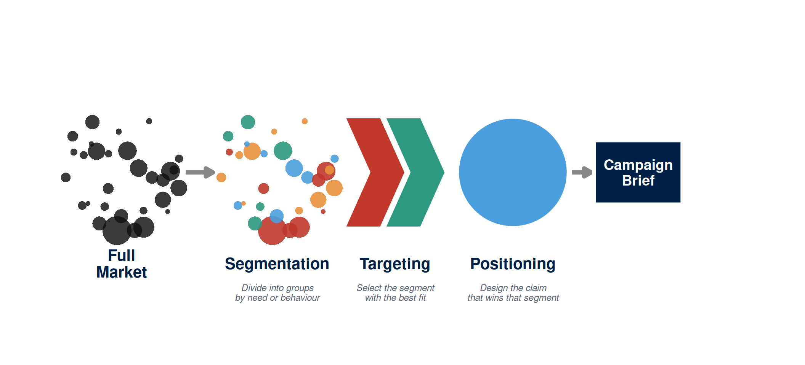
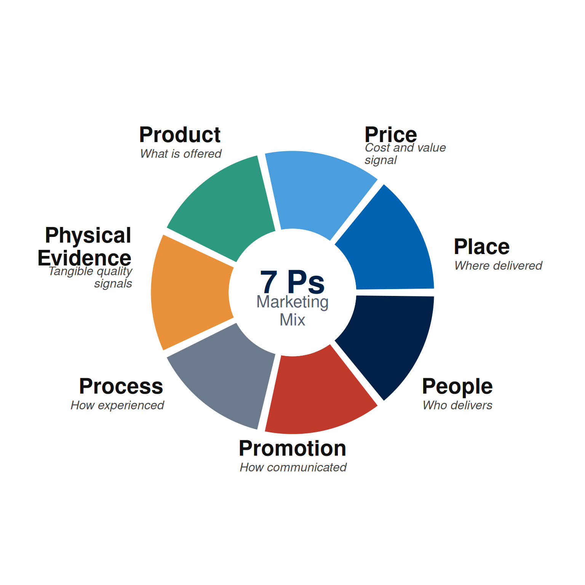
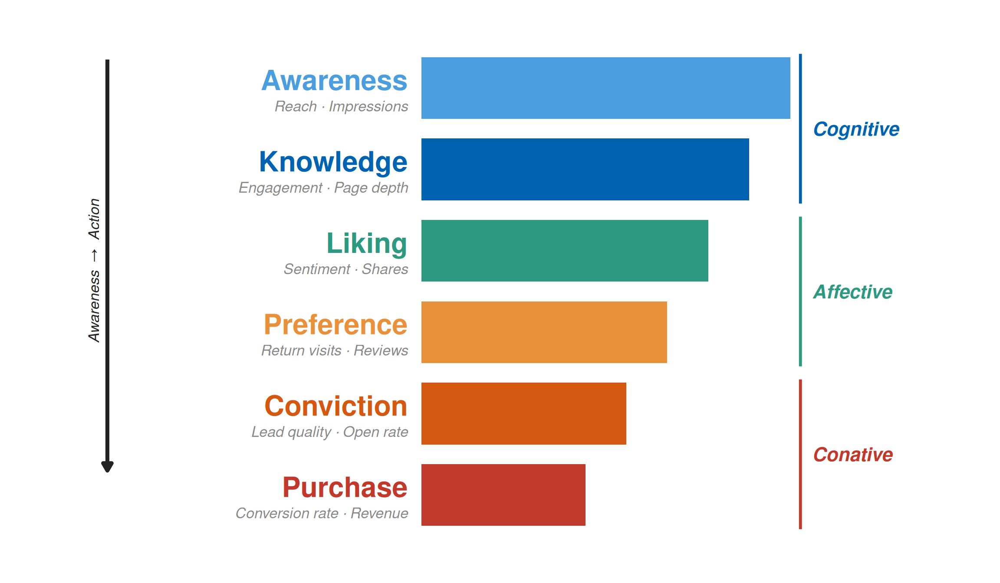
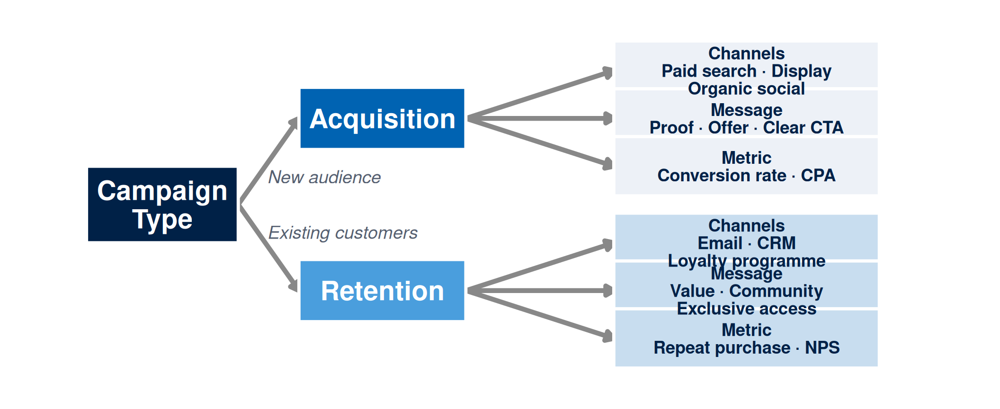
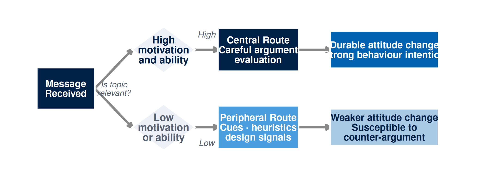

| Stage | Core Question | Digital Decision | Evidence Standard |
|---|---|---|---|
| Segmentation | Which groups exist in this market, and how do they differ in needs, behaviours, or digital habits? | Which search queries, platform communities, or behavioural signals mark each segment? | Public signals, search trends, platform communities, survey data, or institutional research |
| Targeting | Which segment is most valuable to address given size, accessibility, competitive advantage, and strategic fit? | Which segment produces the highest probability of the desired action within resource constraints? | Segment size estimates, engagement rates, cost-per-reach data, and competitive intensity |
| Positioning | What claim, evidence, and frame will make the offering credible and meaningful to the selected segment? | What message, format, and proof point will the target segment find credible rather than generic? | Audience language from public reviews, forums, and search queries; competitor claim mapping |
Week 2: Linking Classic and Digital Marketing Planning
NoteOverview
Last week you profiled an audience: you mapped their searches, read their questions, and drafted a persona grounded in public evidence. That account tells you who you are trying to reach. What it leaves unanswered is what to claim, where to say it, how deeply to argue the case, and which number will confirm on Friday whether the campaign worked. This week you answer those questions.
Classic marketing planning developed across a period when mass media and retail distribution dominated the commercial landscape. The frameworks that emerged, including segmentation and targeting, positioning, the marketing mix, and models of persuasion, were designed to make choices consistent and defensible. Digital marketing changed the speed of feedback, the cost of testing, and the granularity of measurement. The analytical core is unchanged: campaigns still need to identify a target, make a claim, choose a delivery context, and measure a result.
This chapter develops five theoretical frameworks for that analytical core: segmentation, targeting, and positioning; the marketing mix; the hierarchy of effects; relationship marketing; and information processing theory, including the elaboration likelihood model. Each framework is given a two-sentence bridge to a specific campaign decision so that students can see what the theory changes in practice, not only in concept. By the end of the week, you will produce a positioning and planning canvas that links your target segment, positioning claim, channel, message, and metric in a single, internally consistent planning brief. This week’s learning design allocates nine hours: a one-hour lecture, a two-hour tutorial, and six hours of self-directed study.
This Week’s Lecture
Lecture Classic and Digital Planning
Discussion
1 Introduction
⏱ 10 min
Week 1 persona recall, canvas overview, and agenda.
Acquisition
2 Five Frameworks
⏱ 30 min
STP, marketing mix, hierarchy of effects, relationship marketing, and ELM; each with a theory-to-decision bridge and a specific canvas entry.
Practice
3 Positioning Demonstration
⏱ 15 min
Guided whole-class positioning statement using a class-nominated campaign topic; evidence framework applied to each element.
Assessment
4 Attendance & Exit Check
⏱ 5 min
Attendance, followed by a 3-item Moodle concept check.
Learning Objectives
After studying this chapter, you should be able to:
- Explain segmentation, targeting, and positioning, and describe how each stage changes a campaign decision.
- Apply the four-stage hierarchy of effects to set a communication objective aligned to an audience’s current awareness level.
- Distinguish relationship marketing from transactional marketing and identify which digital channels serve each purpose.
- Use the elaboration likelihood model to design messages for high- and low-involvement audiences.
- Write a positioning statement using a template that connects target segment, frame of reference, point of difference, and evidence.
- Separate evidence, inference, assumption, and recommendation in the context of positioning and planning decisions.
- Produce a positioning and planning canvas that links objective, segment, positioning claim, channel, message, and metric.
- Recognise the ethical implications of segmentation and targeting decisions in digital environments.
NoteHow to use this chapter
This chapter covers the five planning frameworks you will apply in the tutorial. Bring your Week 1 persona notes to every session: the tutorial builds directly on the audience signals and evidence you documented last week. Reading the worked example at the end of the chapter (Case A: Villa College Certificate) before the tutorial gives you a full walk-through of all five frameworks applied to a single campaign decision.
Marketing Planning as a Decision Discipline
Marketing planning is the process of making strategic choices before committing resources. A plan answers six questions: who is the target, what will the campaign claim, how will the claim be delivered, what resources are required, what will be measured, and what ethical constraints apply. Those questions are interdependent and must be revisited as evidence changes. A change in the target segment will require a change in the positioning claim. A change in the available channel will require a change in the message format and the measurement approach.
Digital marketing intensified this interdependence. Because platforms provide near-real-time feedback on reach, engagement, and conversion, decisions that once required months to evaluate can now be tested in days. That speed creates pressure to act before the planning questions have been answered clearly. Teams launch campaigns with vague objectives, untested claims, and metrics that track platform activity rather than real audience behaviour. The theoretical frameworks in this chapter are a corrective to that pressure. They slow the decision down just enough to ask: who, exactly, is this for, and what change in their behaviour or belief is the campaign trying to produce?
The planning process examined in this chapter follows a sequence that moves from understanding the market environment to making specific decisions about segment, claim, channel, and message. The environment analysis from Week 1 feeds this process directly: the digital population, the platform context, the competitive landscape, and the audience signals you documented in Week 1 are the inputs to the positioning work you will do this week (Chaffey, D. and Ellis-Chadwick, F., 2022; Kotler, P. and Armstrong, G., 2024).
Segmentation, Targeting, and Positioning
Segmentation is the process of dividing a market into groups of people whose needs, behaviours, or characteristics are sufficiently similar that they can be addressed with a common offering and message. Targeting is the process of selecting which segment or segments to address, based on factors such as size, accessibility, competitive advantage, and strategic fit. Positioning is the process of designing the claim, message, and evidence that will make the offering meaningful and credible to the selected segment (Kotler, P. and Armstrong, G., 2024; Jobber, D. and Ellis-Chadwick, F., 2019).
The three stages are cumulative. Segmentation without targeting leaves the organisation with a map but no destination. Targeting without positioning leaves the segment identified but the claim undefined. Positioning without targeting can produce a polished message aimed at no particular person. Marketing planning begins with the market and narrows progressively to a specific claim for a specific audience in a specific context.
Segments can be defined using many criteria. Demographic criteria include age, income, gender, education, and family structure. Geographic criteria include country, region, city, and climate zone. Psychographic criteria include values, lifestyle, attitudes, and personality. Behavioural criteria include usage rate, benefit sought, brand loyalty, and purchase occasion. In digital marketing, behavioural signals are often the most actionable. A search query, a page visit, a product comparison, or a community membership are more precise than a demographic category because they reveal intent or interest rather than only demographic membership (Chaffey, D. and Ellis-Chadwick, F., 2022).
In the Maldives context, segmentation decisions are shaped by the structure of the digital economy. Mobile penetration is high, and English-language platforms reach both local and international audiences. However, segments differ sharply: a domestic audience of working adults may access digital content primarily through social platforms on mobile data, while an international tourist segment may rely on review platforms and travel aggregators. These two segments require different positioning claims, different channels, and different evidence standards. Treating them as one audience produces messages too broad to resonate with either.
Positioning theory was developed by Ries and Trout to explain why some brands become associated with a clear, memorable claim while others remain interchangeable in the audience’s mind (Ries, A. and Trout, J., 2001). The core insight is that positioning belongs to the perception that forms in the audience’s mind as a result of the campaign’s claims, evidence, and context. A strong position occupies a distinct and valuable place in the target segment’s decision-making hierarchy. A weak position occupies no distinct or valuable place in the audience’s decision-making.
A useful positioning template structures the claim into four components: target segment, frame of reference (what category the offering competes in), point of difference (what the offering does better than alternatives in that category), and evidence (what supports the claim). A positioning statement following this template might read: “For working adults in the Greater Malé area who are considering professional development (target and frame), the Villa College Certificate in Digital Marketing is the only programme that provides a verifiable, open-source analytics portfolio (point of difference) built from live campaign evidence documented over fifteen teaching weeks (evidence).” This statement is testable: each element can be compared with the evidence base, and the claim can be revised when the evidence calls it into question.
Table 1 illustrates how the three STP stages apply in a digital planning context, with the corresponding campaign decision at each stage.
Theory-to-decision bridge. Segmentation, targeting, and positioning theory states that campaigns directed at a broadly defined audience produce weaker results because the claim must be too general to be compelling for any specific group. This changes the campaign decision: the planning canvas must name a single primary segment and write a positioning statement that addresses that segment’s specific need, not the needs of every possible audience.

The Marketing Mix
The marketing mix is the set of controllable variables that an organisation combines to produce a response in a target market. McCarthy introduced the four-element framework known as the 4Ps: product, price, place, and promotion (McCarthy, E. J., 1960). Kotler and others extended this to seven elements for service contexts by adding process, physical evidence, and people (Kotler, P. and Armstrong, G., 2024). In digital marketing, the mix extends beyond the promotion element. Decisions about how a service is delivered online (place and process), how pricing is communicated (price transparency and comparison), and how value is demonstrated through content (product communication) are all part of the campaign planning problem.
The 4Ps framework is useful for checking whether a campaign is internally consistent. A promotion that promises a premium experience will fail if the product, the delivery process, or the price point undermines that claim when the customer arrives. Digital channels accelerate this discovery. A customer who reads a promising advertisement can immediately compare it with reviews, visit the landing page, check the price, and abandon the path if any element contradicts the promise. The marketing mix disciplines the campaign by asking whether each element is consistent with the positioning claim.
For digital services, the 7Ps extension adds practical clarity. Process describes how the service is delivered and experienced, including onboarding, fulfilment, and support. Physical evidence describes the tangible cues that signal quality in a digital context: website design, certification logos, testimonials, sample work, and data security signals. People describes the role of staff, instructors, community managers, and influencers in shaping the service experience. Each of these elements is a potential campaign asset or liability. A campaign for an online learning programme that ignores process will struggle to address the prospective student’s question: “What will the learning experience actually be like?”
For a local island guesthouse, the seven elements must tell one consistent story. The product is the stay experience, the price signals whether that experience is budget or boutique, the OTA listing is the place, and the photography on the property page is the physical evidence that answers the traveller’s first question before they read a word of copy. A promotional post that promises a “premium hideaway” while the listing shows an inconsistent price and unresponsive host reviews will be contradicted at every point of contact.
Theory-to-decision bridge. Marketing mix theory states that each element of the mix communicates a signal about value, and those signals must be consistent for the campaign to build trust. This changes the campaign decision: before writing a headline, the planning team should audit whether the product, price, delivery process, and physical evidence on the landing page support the claim. An inconsistency discovered after launch is more costly to fix than one discovered during planning.

The Hierarchy of Effects
The hierarchy of effects model, introduced by Lavidge and Steiner, describes the stages through which a consumer moves from ignorance of an offering to its purchase (Lavidge, R. J. and Steiner, G. A., 1961). The original model has six stages: awareness, knowledge, liking, preference, conviction, and purchase. Later reformulations condensed these into three broad phases: cognitive (thinking), affective (feeling), and conative (doing). The model’s practical value is that it prevents a campaign from attempting to generate sales from an audience that has not yet formed a preference.
In digital marketing, the hierarchy of effects maps directly onto campaign objective setting. A campaign aimed at an audience with no awareness of the product should prioritise awareness and knowledge objectives, measured by reach, impressions, branded search volume, and unaided recall. A campaign aimed at an audience that is aware but undecided should prioritise liking and preference objectives, measured by engagement, review sentiment, time on page, and comparison tool use. A campaign aimed at an audience that is convinced but has not yet acted should prioritise conviction and purchase objectives, measured by click-through rate, conversion rate, and cart completion. Using a conversion metric for a cold awareness campaign produces misleading data, because the metric was never appropriate for the communication goal (Fill, C. and Turnbull, S., 2019; Chaffey, D. and Ellis-Chadwick, F., 2022).
The hierarchy also explains why a campaign that performs well on one metric can disappoint on another. An awareness campaign that generates high reach but low engagement may be succeeding at its proper goal, while the team measures it against a conversion goal it was never designed to achieve. Clarity about the intended stage of the hierarchy prevents this misalignment between objective, activity, and measurement.
Table 2 shows each stage of the hierarchy with its corresponding digital objective, channel examples, and the measurement indicators that are appropriate at that stage.
| Stage | Phase | Campaign Objective | Channel Examples | Primary Metric |
|---|---|---|---|---|
| Awareness | Cognitive | Build recognition of the offering in the target segment | Display, social reach campaigns, video pre-roll, OOH digital | Reach, impressions, branded search lift |
| Knowledge | Cognitive | Build understanding of what the offering does and why it is relevant | Content marketing, explainer video, FAQ page, search informational | Engagement rate, page depth, time on page |
| Liking | Affective | Create a positive emotional response to the offering | Social engagement, testimonials, influencer, community | Sentiment, shares, saves, comment quality |
| Preference | Affective | Differentiate the offering from alternatives in the audience’s mind | Comparison content, case studies, reviews, retargeting | Review ratings, comparison tool visits, return visits |
| Conviction | Conative | Overcome final objections and build purchase intent | Email sequences, retargeting, chat support, limited offers | Click-to-enquiry rate, email open rate, lead quality |
| Purchase | Conative | Produce the target action: enquiry, registration, sale, or download | Search transactional, landing page, checkout optimisation | Conversion rate, cost per acquisition, revenue |
Theory-to-decision bridge. Hierarchy of effects theory states that purchase intent requires awareness and knowledge as prerequisites; a campaign directed at an audience lacking both will underperform regardless of creative quality. This changes the campaign decision: before selecting a channel or writing a call to action, the planner must estimate which stage the target audience is at and select an objective and metric that matches that stage. A misaligned metric misleads the campaign team about whether the work is succeeding.

Relationship Marketing
Relationship marketing shifts the focus of marketing planning from individual transactions to sustained exchange relationships. Gronroos defined relationship marketing as establishing, maintaining, and enhancing relationships with customers and other partners at a profit, so that the objectives of all parties are met through mutual exchange and fulfilment of promises (Gronroos, C., 1994). Morgan and Hunt developed the commitment-trust theory, arguing that long-term relationships are sustained by trust (the belief that the exchange partner is reliable and has integrity) and commitment (the belief that the relationship is important enough to warrant continued effort) (Morgan, R. M. and Hunt, S. D., 1994).
For campaign planning, relationship marketing has two practical implications. First, it distinguishes between acquisition channels, which bring new customers into a first contact, and retention channels, which sustain and deepen relationships with existing customers. These serve different communication objectives and should be measured with different metrics. Acquisition campaigns are typically evaluated on reach and conversion rate. Retention campaigns are evaluated on repeat engagement, loyalty programme activity, email open rates, net promoter score, and customer lifetime value.
Second, relationship marketing changes what a campaign promises. A transactional campaign promises a one-time benefit: a discount, a product feature, or an event date. A relationship campaign promises consistent value over time: expert guidance, a community, progressive skill-building, or exclusive access. In digital contexts, the difference is visible in the choice between a single promotional post and a nurture sequence, between a landing page optimised for immediate conversion and a content series optimised for progressive trust. The planning canvas should specify which type of campaign is being designed, because the channel, message, and metric differ substantially between the two.
In Maldivian small and medium enterprise contexts, relationship marketing is often the more appropriate framework because repeat custom and word-of-mouth recommendation drive significant revenue in markets where social trust is high and reputation travels quickly through community networks. A guesthouse in Malé that maintains consistent, informative communication with past guests is building a relationship asset that lowers the cost of future acquisition. A digital campaign that treats every contact as a new transaction fails to use this asset.
Theory-to-decision bridge. Relationship marketing theory states that the most valuable marketing outcome is often not a single conversion but a sustained relationship that generates repeat behaviour and referral. This changes the campaign decision: the planning canvas must specify whether the campaign is designed for acquisition or retention, because the channel, message, and metric are fundamentally different for each purpose.

Information Processing and the Elaboration Likelihood Model
Information processing theory examines how messages are received, encoded, evaluated, and acted upon by an audience. The elaboration likelihood model developed by Petty and Cacioppo is one of the most influential frameworks in this tradition (Petty, R. E. and Cacioppo, J. T., 1986). It proposes two routes through which persuasion occurs. The central route involves careful, deliberate evaluation of the message argument. The peripheral route involves reliance on cues, heuristics, and signals that do not require careful reasoning.
The route an audience uses depends primarily on two factors: motivation and ability. An audience that is highly motivated to process a message, because the topic is personally relevant, and able to do so, because they have the time, attention, and knowledge required, will use the central route. Persuasion through the central route produces more durable attitude change and is more likely to lead to behaviour. An audience with low motivation or low ability will use the peripheral route. Peripheral persuasion relies on cues such as source credibility, social proof, design quality, and scarcity signals. It can produce behaviour change, but the attitude formed is less durable and more susceptible to counter-argument (Fill, C. and Turnbull, S., 2019).
For digital campaign planning, the elaboration likelihood model changes message design decisions in specific ways. A high-involvement purchase, such as a postgraduate programme, a health intervention, or a business software subscription, requires messages designed for the central route: detailed information, evidence, testimonials from credible sources, and arguments that address the audience’s real objections. A low-involvement decision, such as choosing between two comparable products of similar price, can use peripheral cues effectively: strong design, positive reviews displayed prominently, or a familiar endorser. Using a cue-heavy peripheral message for a high-involvement decision is likely to fail because the audience will engage with the argument rather than the cue, and the argument is absent.
In digital environments, the same audience member can shift between routes depending on context. A person searching “best MSc in digital marketing Maldives” is in a high-involvement, central-route mode. The same person scrolling a social platform at 11pm may be in peripheral mode and respond to design quality and social proof rather than programme structure details. This means the hierarchy of effects stage and the information processing route must both be considered when selecting the channel and writing the message.
Theory-to-decision bridge. The elaboration likelihood model states that the persuasion route depends on the audience’s motivation and ability to process information, and that central-route persuasion produces more durable attitude change. This changes the campaign decision: the planning canvas must match message depth to processing route. A high-involvement segment requires argument, evidence, and answers to objections. A low-involvement context requires salient cues. Using the wrong message design for the expected route wastes the creative investment.

Applying the Evidence Framework to Planning
The evidence, inference, assumption, and recommendation framework from Week 1 applies directly to planning decisions. Every element of the positioning and planning canvas should be classified: which claims rest on documented evidence, which rest on cautious inference from that evidence, which are assumptions requiring testing, and which are recommendations that follow from the evidence and theory.
Positioning claims are particularly susceptible to assumption-driven reasoning. A team may believe that their target segment values innovation, sustainability, or community without any evidence that those attributes drive decision-making in that segment. The positioning canvas should document what evidence supports each claim in the positioning statement. If no evidence is available, the claim should be labelled as an assumption and a testing method should be proposed.
The hierarchy of effects stage should also be treated as an inference. If no research has been conducted to establish awareness levels, the team is assuming a stage. That assumption should be stated clearly, because a wrong assumption about the awareness stage will produce a campaign with the wrong objective and the wrong metric. A campaign designed to build conviction in an audience still unaware of the product will underperform regardless of its creative quality.
Table 3 shows how the evidence framework applies to the five core elements of the planning canvas.
| Canvas Element | Evidence | Assumption (if evidence is absent) | Testing Method |
|---|---|---|---|
| Target segment | Documented search signals, platform community data, or survey results showing who is searching and engaging | Target is defined by demographic or behavioural logic but not yet verified with public signals | Search trend analysis, platform audience insights, or short survey with target population |
| Hierarchy stage | Awareness survey, branded search volume data, or direct audience research | Stage is estimated from market context rather than measured directly | Brand lift survey, keyword comparison between branded and unbranded search, or focus group |
| Positioning claim | Competitor claim audit, audience language from reviews or forums, or A/B test of message variants | Point of difference is believed to be relevant but has not been tested with the target segment | A/B message test, social listening for segment language, or user interview |
| Channel selection | Platform reach data, audience device and context data, or competitor channel mapping | Channel is selected based on general audience knowledge rather than segment-specific evidence | Small-budget platform test across two channels before full deployment |
| Primary metric | Historical conversion data, industry benchmark, or previous campaign results | Metric is selected by analogy with similar campaigns rather than from baseline data for this audience | Historical benchmark research or pre-launch pilot with tracking in place |
AI-Assisted Planning Protocol
AI can support the planning process at several points: generating candidate segments from a market brief, drafting alternative positioning statements, mapping a competitor’s likely positioning from their public content, and critiquing a planning canvas against a rubric. As in Week 1, AI must not invent market facts, fabricate audience research, or replace the student’s judgement. Every AI-assisted claim in the canvas must be traceable to a documented source or labelled as an assumption.
A useful discipline is to treat AI as a planning critic rather than a planning author. Present AI with your evidence base and your provisional decisions. Ask it to challenge the weakest assumption, identify the most likely source of error, and suggest what evidence would change the recommendation. This use of AI strengthens the planning process without outsourcing the reasoning.
The following prompt templates are designed for the Week 2 planning task.
Role: Act as a critical digital marketing strategist.
Context: I am building a positioning and planning canvas for [campaign topic] targeting [segment description].
Evidence: [paste your three to five documented signals from Week 1 or this week's research].
Task: Draft two alternative positioning statements using the template:
"For [target segment] who [need or problem], [offering] is the [frame of reference]
that [point of difference] because [evidence]."
Constraints: Do not invent audience facts. Flag any claim that is not supported by the evidence I provided.
Label those claims as assumptions.
Output: Two positioning statements with a table showing which evidence supports each element.Role: Act as a hierarchy of effects advisor.
Context: My target segment for [campaign] is [segment]. I believe they are at the [stage] stage
of the hierarchy of effects.
Evidence for this belief: [paste your evidence or state that it is an assumption].
Task: Identify the most appropriate campaign objective and primary metric for this stage.
Then identify what evidence I would need to confirm the stage rather than assume it.
Constraints: Do not assume a stage without acknowledging the evidence base.
Output: Recommended objective, metric, and a testing method to verify the stage assumption.Role: Act as a relationship marketing consultant.
Context: My campaign for [offering] is designed for [acquisition or retention].
Target segment: [description].
Task: Identify the three most appropriate digital channels for this type of campaign and explain
why each channel fits the acquisition or retention objective.
For each channel, name one metric that would distinguish a healthy campaign from a failing one.
Constraints: Do not recommend channels that are unsuitable for the segment's platform context.
Output: Channel, rationale, and diagnostic metric for each of the three recommendations.Keep a prompt log for the Week 2 task using the template introduced in Week 1. Every prompt, AI output, evidence link, and student decision must be recorded. Refer to Table 1 in the Week 1 Tutorial for the required structure.
Worked Example: Villa College Certificate in Digital Marketing (Case A)
The following example walks through the positioning and planning canvas for a fictional recruitment campaign for a short professional certificate programme at a Maldivian institution. It is not intended as a real campaign brief but as an illustration of how each framework applies to a concrete planning decision. Apply the same logic to your own campaign topic.
The institution offers a twelve-week Certificate in Digital Marketing, delivered in the evenings and on weekends, targeting working professionals in the Greater Malé area who want to enter or advance in the digital marketing sector. A first pass at the market produces a common planning error: the target is defined as “working adults interested in digital marketing,” which is not a segment. It is a description of almost anyone who might enrol. A segment requires specific behavioural or attitudinal criteria that distinguish people who are likely to act from those who are not.
Evidence-based segmentation for this campaign might proceed as follows. A Google Trends analysis shows that queries for “digital marketing course Maldives” and “online marketing certificate” have increased over a twelve-month period. A review of LinkedIn profiles for working professionals in Malé shows that mid-level marketing coordinators and communications officers in the hospitality, retail, and financial services sectors often lack formal digital credentials. Public job advertisements from Maldivian employers increasingly list “Google Analytics”, “social media management”, and “performance marketing” as requirements. These signals point to a specific segment: mid-career marketing or communications professionals, aged approximately 25 to 40, employed in Malé, who face credential gaps in digital skills and have professional motivation to address them.
With a segment defined, the hierarchy of effects stage can be estimated. The available evidence suggests that this segment knows that digital marketing certificates exist (awareness) but has not yet formed a clear preference for this specific programme over alternatives (awareness to knowledge transition). The appropriate campaign objective is therefore knowledge and preference-building rather than conversion. A campaign designed for immediate enrolment conversion would be premature and would produce misleading results.
The positioning statement following the four-element template would read: “For mid-career marketing and communications professionals in the Greater Malé area who need verifiable digital credentials to advance their careers (target and need), the Villa College Certificate in Digital Marketing is the only programme in the Maldives (frame of reference) that produces a live, open-source analytics portfolio built from a real client or community campaign (point of difference), evidenced by twelve weeks of structured evidence documentation reviewed by an industry-qualified instructor (evidence).” Each element of this statement is testable. The point of difference claim rests on the assumption that no comparable programme currently delivers a live portfolio. That assumption should be verified through a competitive audit before the campaign is launched at scale.
The elaboration likelihood model implies that this audience, faced with a significant career investment decision, will engage in central-route processing. They will read programme information, compare curricula, check instructor credentials, and look for social proof from former students. A campaign that relies on peripheral cues alone, such as attractive design and generic claims about career outcomes, will not be persuasive to this audience. The message design must provide argument, evidence, and answers to the most common objections: schedule compatibility, cost justification, and the credibility of the qualification.
For the channel decision, the hierarchy stage and ELM route point to a combination of organic search and LinkedIn sponsored content for awareness and knowledge, followed by email to a permission list and retargeting for preference and conviction. The primary metric for the knowledge phase is time on page for the programme description and curriculum page, paired with branded search volume for the institution and programme name. These metrics indicate whether the audience is engaging with the content that supports the central-route decision, rather than only whether they clicked.
TipInteractive Lab: Digital Marketing Funnel Simulator
Set the sliders to match your Week 2 canvas estimates. Observe which stage produces the largest drop-off, then ask: is that a creative problem, a targeting problem, or a hierarchy mismatch? A very low landing-page conversion on a cold awareness campaign may simply mean the audience was not yet ready to convert, not that the page design is poor.
#| '!! shinylive warning !!': |
#| shinylive does not work in self-contained HTML documents.
#| Please set `embed-resources: false` in your metadata.
#| standalone: true
#| viewerHeight: 640
#| components: [viewer]
library(shiny)
library(bslib)
ui <- page_sidebar(
title = NULL,
sidebar = sidebar(
width = 260,
sliderInput("visitors", "Monthly visitors (reach)", 500, 100000, 10000, step = 500),
sliderInput("ctr", "Click-through rate (%)", 0.1, 20, 2.5, step = 0.1),
sliderInput("cvr_lp", "Landing page conversion (%)", 0.1, 30, 4.0, step = 0.1),
sliderInput("cvr_l2c", "Lead to customer rate (%)", 1, 80, 20, step = 1),
sliderInput("aov", "Average order value (MVR)", 100, 50000, 1500, step = 100),
sliderInput("cost", "Monthly campaign cost (MVR)", 1000, 200000, 20000, step = 1000)
),
layout_columns(
col_widths = c(5, 7),
card(card_header("Funnel metrics"), tableOutput("kpi")),
card(card_header("Funnel chart"), plotOutput("funnel", height = "230px"))
),
card(card_header("Interpretation"), tableOutput("interp"))
)
server <- function(input, output, session) {
m <- reactive({
clicks <- round(input$visitors * input$ctr / 100)
leads <- round(clicks * input$cvr_lp / 100)
customers <- round(leads * input$cvr_l2c / 100)
revenue <- customers * input$aov
roas <- if (input$cost > 0) revenue / input$cost else 0
list(visitors=input$visitors, clicks=clicks, leads=leads,
customers=customers, revenue=revenue, roas=roas,
profit=revenue - input$cost, cost=input$cost)
})
output$kpi <- renderTable({
x <- m(); fmt <- function(n) formatC(n, format="d", big.mark=",")
data.frame(
Metric = c("Visitors","Clicks","Leads","Customers",
"Revenue (MVR)","Campaign cost (MVR)","ROAS","Net return (MVR)"),
Value = c(fmt(x$visitors),fmt(x$clicks),fmt(x$leads),fmt(x$customers),
fmt(x$revenue),fmt(x$cost),sprintf("%.2f×",x$roas),fmt(x$profit)),
`Hierarchy stage` = c("Awareness","Knowledge","Preference/Conviction","Purchase",
"","","Break-even at 1.00×",
ifelse(x$profit>=0,"Profitable","Loss")),
check.names=FALSE)
}, striped=TRUE, hover=TRUE)
output$funnel <- renderPlot({
x <- m()
vals <- c(x$visitors, x$clicks, x$leads, x$customers)
pcts <- round(vals / max(x$visitors,1) * 100, 1)
labs <- c("Visitors","Clicks","Leads","Customers")
cols <- c("#002147","#0063b2","#4a9edd","#a8c8e3")
par(mar=c(3,6,0.5,7), bg="white", family="sans")
bp <- barplot(vals, horiz=TRUE, names.arg=labs, col=cols,
border=NA, las=1, xlab="Count",
xlim=c(0, max(vals)*1.45))
text(vals+max(vals)*0.01, bp,
paste0(formatC(vals,format="d",big.mark=",")," (",pcts,"%)"),
adj=0, cex=0.82)
}, bg="white")
output$interp <- renderTable({
x <- m(); ctr <- input$ctr; cvr <- input$cvr_lp; l2c <- input$cvr_l2c
data.frame(
KPI = c("Click-through rate","Landing page conversion","Lead to customer","ROAS"),
`Your value` = c(paste0(ctr,"%"),paste0(cvr,"%"),paste0(l2c,"%"),
sprintf("%.2f×",x$roas)),
`Typical range` = c("1-5%","2-8%","10-30%","2x-10x"),
Interpretation = c(
ifelse(ctr<1,"Below average: test ad copy or targeting",
ifelse(ctr>5,"Strong: check landing page","Within typical range")),
ifelse(cvr<2,"Below average: review page clarity and message fit",
ifelse(cvr>8,"Strong: consider scaling traffic","Within typical range")),
ifelse(l2c<10,"Low: review lead qualification",
ifelse(l2c>30,"High: verify lead quality","Within typical range")),
ifelse(x$roas<1,"Losing money: improve conversion at one stage",
ifelse(x$roas<2,"Marginal: optimise highest drop-off stage",
ifelse(x$roas>=4,"Profitable: scale carefully","Acceptable: monitor costs")))
), check.names=FALSE)
}, striped=TRUE, hover=TRUE)
}
shinyApp(ui, server)